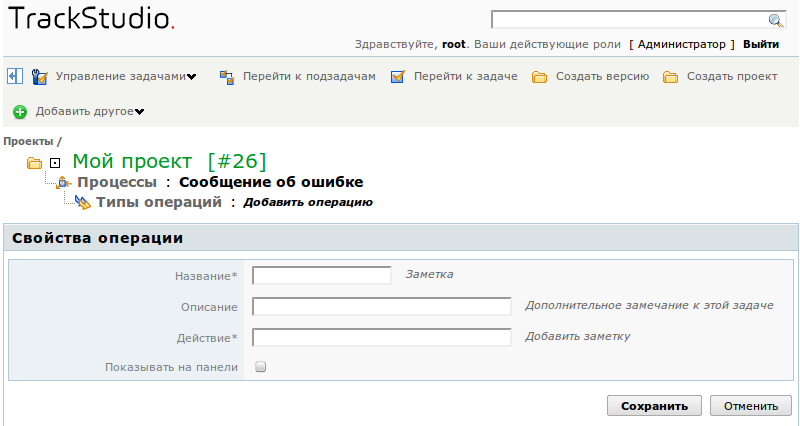
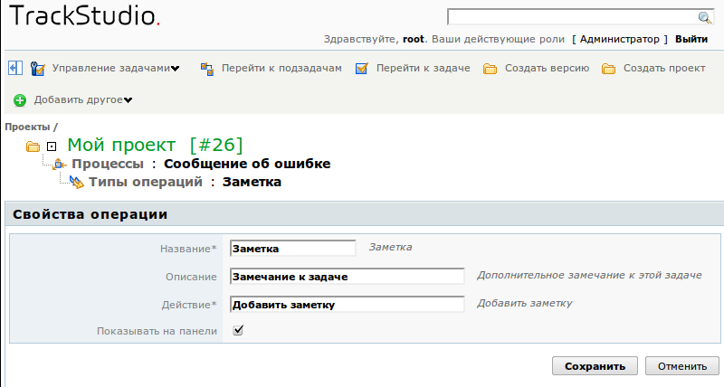

В TrackStudio задачи переводятся из одного состояния в другое с помощью операций. Операции играют чрезвычайно важную роль, т.к. это не только единственный способ проводить задачу по жизненному циклу: с помощью операций также меняются приоритет задачи, срок ее выполнения, ответственный, бюджет задачи. В операциях может указываться потраченное на этап время (если вы используете учет времени) и меняется значение дополнительных полей, заданных для процесса. К каждой операции при ее выполнении пользователь оставляет комментарий.
Создание и настройка набора операций, пожалуй, самая сложная и ответственная часть настройки процессов для TrackStudio.
Для того, чтобы задать набор операций, перейдите на страницу этого процесса через меню, а затем — на вкладку "Типы операций".
Как создать операцию
Нажмите на кнопку "Добавить операцию" в средней панели. В открывшемся окне введите название операции, ее описание и название действия. Вы можете отметить опцию "Показывать на панели". В этом случае на панели операций в задаче с этим процессом появится кнопка, нажав на которую пользователь инициирует выполнение операции. Надпись на кнопке будет соответствовать тексту, указанному в поле "Действие". Текст описания операции будет появляться в виде подсказки при наведении на эту кнопку. Если опцию "Показывать на панели" не отметить, то кнопка операции будет спрятана в меню "Другие операции".
После внесения данных нажмите кнопку "Сохранить".
Предусмотрена также возможность группировать кнопки операций. Группа задается в поле "Действие" с помощью прямого слеша (/). Например "Отдел 1/Утвердить", "Отдел 1/Отклонить".

Как редактировать параметры операции
Для того, чтобы изменить название операции, ее описание или сменить отображение на панели, кликните на иконке  в списке операций. В открывшейся форме введите новое название операции и, если нужно, измените ее параметры. Нажмите кнопку "Сохранить" внизу формы.
в списке операций. В открывшейся форме введите новое название операции и, если нужно, измените ее параметры. Нажмите кнопку "Сохранить" внизу формы.

Также вы можете перейти к редактированию свойств операции со страницы операции. Для перехода на эту страницу кликните на названии операции в списке. Перейти к редактированию свойств операции можно, нажав на кнопку "Редактировать операцию" в средней панели.
Как клонировать операцию
Вы можете упростить для себя создание новых операций, клонируя ранее настроенные. При клонировании из исходной операции будут полностью скопированы все свойства: переходы между состояниями, настройки прав доступа и т.п. Для того, чтобы клонировать операцию, выберите ее в списке и нажмите кнопку "Клонировать" внизу формы.
Как удалить операцию
Для того, чтобы удалить операцию, отметьте ее флажком в списке и нажмите кнопку "Удалить" внизу формы.
Вы не сможете удалить из процесса операцию, если она уже используется в существующих задачах.